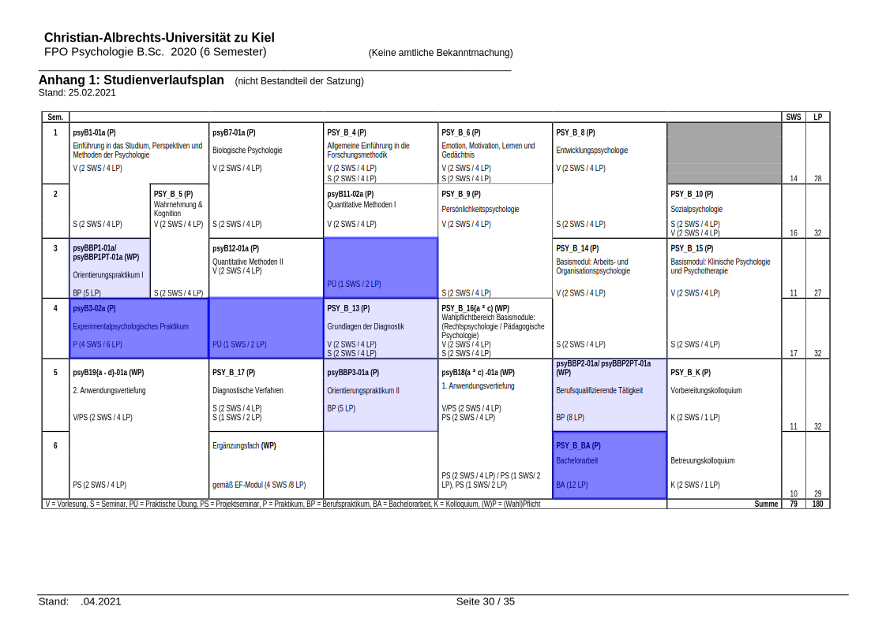

3 Vorlesung I - Rste Schritte
3.1 Organisatorisches
Semesterplan
| Einheit | Vorlesung | Übungswoche | Thema |
|---|---|---|---|
| 1 | 2.11.20 | keine Übung | Grundlagen und Begriffe |
| 2 | 16.11.20 | KW 48 | Vektoren und Indizierung |
| Datenformate erstellen und transformieren | |||
| 3 | 30.11.20 | KW 50 | Pakete installieren und benutzen |
| Datensätze erstellen und ergänzen können | |||
| Datensätze sortieren und indizieren können | |||
| 4 | 14.12.20 | KW 1 | Faktoren |
| deskriptive Kennwerte | |||
| Aggregation I | |||
| 5 | 11.01.21 | KW 3 | Aggregation II |
| In- und Export von Datensätzen | |||
| 6 | 25.01.21 | KW 5 | Grafische Darstellungen I |
| 7 | 08.02.21 | KW 7 | Grafische Darstellungen II |
| 8 | 22.02.21 | keine Übung | Puffer |
| Probeklausur |
Übungsablauf
Die Übung wird zur Hälfte als Vorlesung, zur anderen Hälfte in Kleingruppen abgehalten.
Die Daten sind im Kalender und im Semesterplan im Olat ersichtlich.
Prüfungsleistung
Die Prüfungsleistung in dieser Veranstaltung besteht aus:
- Dem regelmäßigen Bearbeiten und Bestehen von Hausaufgaben. Diese werden über das OLAT ausgeteilt und abgegeben, zu jeder Veranstaltung wird eine neue Serie herausgegeben. Das Bestehen der Hausaufgaben ist nötig, um zur Klausur zugelassen zu werden.
- Als Bestanden gilt eine Serie, wenn alle Aufgaben sinnvoll bearbeitet wurden.
- Unter regelmäßigem Bearbeiten versteht sich das Bestehen aller Serien mit einer Ausnahme.
- Als Bestanden gilt eine Serie, wenn alle Aufgaben sinnvoll bearbeitet wurden.
- Im Klausurzeitraum findet an einem Tag eine praktische Prüfung statt.
3.2 Einführung
Rste Schritte
Diese Veranstaltung und das zugehörige Material sollen Ihnen einen Einstieg in das computergestützte Aufbereiten und Auswerten von empirischen Daten bieten.
Dazu werden wir auf die von ihren Autoren als ‘software environment for statistical computing and graphics’ bezeichnete, freie Umgebung R zurückgreifen.
Wozu brauche ich das?

Warum R ?
(…und nicht SPSS…)
| SPSS | R | |
|---|---|---|
| Pro | einfache Bedienung |
das CRAN (Comprehensive R Archive Network)
|
| weit verbreitet | kostenlos | |
| macht was angewiesen ist | ||
| Contra | kann nicht alles | etwas Gewöhnung notwendig |
| relativ kostenintensive Lizenzen | ||
| nimmt vieles ab | ||
| nicht beliebig erweiterbar |
Aber die viel wichtigeren Argumente: R kann Alles
R macht Spass
Literatur
Die Veranstaltung orientiert sich an:
Wollschläger (2016) . R kompakt.(Link aus dem Uni-Netz).
Grolemund and Wickham (2017) . R for Data Science (Link).
Installation & Verwendung
Es wird die Verwendung der grafischen Benutzeroberfläche RStudio empfohlen.
Beachten Sie, dass für die Verwendung von RStudio zuvor eine Basisinstallation von R erfolgen muss:
Benutzeroberfläche RStudio
Benutzeroberfläche von RStudio. Oben links: Editor; unten links: Konsole; oben rechts: Environment bzw. History; unten rechts: Files, Plots, Help, etc.
Allgemeine Hinweise
- Verwenden Sie die Konsole (unten links) nur für einzeilige Berechnungen beim “Ausprobieren”
- Verwenden Sie stets den Editor (oben links), um mehrzeilige Berechnungen direkt in ein Skript zu schreiben
- Kommentieren Sie Ihren Code ausreichend und sinnvoll mit Hilfe des
#-Zeichens - Speichern Sie Ihr Skript unter einem sinnvollen Namen in einem sinnvoll benannten Verzeichnis ab
- Speichern Sie regelmäßig mit Strg+S zwischen
- Eine einzelne Skript-Zeile (diejenige, in der sich der Cursor befindet) oder zuvor markierter Code lassen sich mit Strg+Enter ausführen
- In der Konsole bricht ESC die Eingabe ab
Zum besseren Verständnis
In diesem Skript enthalten die grau hinterlegten Zeilen R-Input, die weiß hinterlegten Zeilen den R-Output. Ein ganz einfaches Beispiel zum Ausprobieren: Die simple Berechnung von 1 + 1.
1 + 1## [1] 2Ausdrücke in der R-Konsole
Anweisungen in R funktionieren grundsätzlich über das Ausführen von Ausdrücken. Dabei werden Ausdrücke entweder durch Semikolons oder Zeilenumbrüche beendet.1 + 1; 2 + 2;## [1] 2## [1] 41+1## [1] 22+2## [1] 4Kommentare
R bietet außerdem die Möglichkeit, im Code Anmerkungen zu machen, die beim Ausführen ignoriert werden. Diese werden mit einem #-Symbol eingeleitet.
1 + 1 ### +1 +1## [1] 2#Dies ist ein KommentarNutzen Sie Kommentare innerhalb Ihrer Skripte, um Arbeitsschritte kenntlich zu machen und zu erklären.
Die übersichtliche Gestaltung Ihrer Skripte ist von wirklich großem Vorteil bei der Arbeit mit R.
Dies kann nicht oft genug betont werden.
3.3 Grundlegende Rechenoperationen
Addition, Subtraktion
2 + 3 ## [1] 528 - 5 ## [1] 23Multiplikation, Division
2 * 21 ## [1] 4292 / 4## [1] 23Rechenregeln
1+1*1+1*(1+1)+1## [1] 5Wie man sieht, befolgt R die Punkt-vor-Strich-Regel und berücksichtigt Klammerung.
Potenz, Quadratwurzel (“squareroot”), Betrag (“absolute”)
3^2## [1] 9sqrt(9)## [1] 3abs(-42)## [1] 42Runden
pi## [1] 3.141593round(pi)## [1] 3round(pi, digits=2)## [1] 3.14round(pi, digits=3)## [1] 3.142Aufgabe
round(pi, digits = 0) * 3 ### + 5Was kommt raus?
pi14- eine Fehlermeldung
9NULL
3.4 Ausdrücke, Funktionen, Argumente
Funktionen & Argumente
In R werden sehr häufig Funktionen verwendet.
Diese repräsentieren eine Reihe von Anweisungen, die beim Aufrufen mit spezifischen Parametern ausgeführt werden sollen.
Diese Parameter werde in Form von Argumenten übergeben.
Beispielsweise enthält die Funktion round() die nötigen Anweisungen, um eine Zahl zu runden. Hierfür erwartet round() die zu rundende Zahl und die Anzahl an Nachkommastellen auf die zu runden ist.
Man schreibt immer Funktionsname(Argumentliste).
Bei Funktionen müssen immer runde Klammern vorhanden sein, auch wenn keine einzelnen Argumente vorgegeben werden.
Es gibt obligatorische Argumente, ohne deren Übergabe das Aufrufen einer Funktion zu einer Fehlermeldung führt:
round(pi)## [1] 3round() ### Funktionsaufruf ohne Argument## Error in eval(expr, envir, enclos): 0 arguments passed to 'round' which requires 1 or 2 arguments… und optionale Argumente:
round(pi, digits=3)## [1] 3.142round(pi, digits=pi)## [1] 3.142round(pi, digits=15)## [1] 3.141593Gibt man den Namen eines Arguments nicht an, entscheidet die Position in der Liste über die Interpretation des Arguments durch R. Achtung: Fehlerquelle!
round(1/42, 3)## [1] 0.024round(3, 1/42)## [1] 33.5 Objekte
Objekte sind für den späteren Gebrauch mit einem Namen versehene und im Arbeitsspeicher abgelegte Ergebnisse von Ausdrücken.
Dabei ist Objekt der Überbegriff für eine Vielzahl von möglichen Datenstrukturen.
Ein paar Beispiele für Datenstrukturen in R:
- eindimensionale Vektoren (vector)
- mehrdimensionale Matrizen (matrix)
- Funktionen(function)
Objekte benennen
Wählen Sie kurze, aber aussagekräftige Objektnamen! Objektnamen dürfen dabei enthalten: Buchstaben, Zahlen, Punkte, Unterstriche
Achtung:
- Immer mit einem Buchstaben beginnen
- Groß-/Kleinschreibung ist relevant
- Keine anderen Sonderzeichen
- Keine durch R reservierte Namen von Funktionen, Konstanten, etc. (z.B. “mean,” “pi,” “if,” etc.)
(im Zweifel Überprüfen mitexists())
Hier nochmal der nachdrückliche Hinweis:
Tun Sie sich selbst den Gefallen, Ihre Objekte eindeutig und nachvollziehbar zu benennen!
Zuweisungen an Objekte
Ergebnisse von Ausdrücken können benannten Objekten zugewiesen werden.
Dabei sind folgende Ausdrücke äquivalent:
firstObject = 42
42 -> firstObject
firstObject <- 42Die letzte Möglichkeit stellt dabei die Beste im Hinblick auf Übersichtlichkeit und Eindeutigkeit dar.
Verwenden von Objekten:
Die Objektnamen können dann synonym zu ihrem Inhalt verwendet werden.
firstObject + 1; 42 + 1;## [1] 43## [1] 43Objekte ausgeben
Um diese Ausgabe nachzuholen gibt es folgende Möglichkeiten:
print(firstObject)## [1] 42firstObject## [1] 42Diese beiden Versionen sind faktisch dieselbe, da das einfache Aufrufen eines Variablennamens implizit als ein Aufruf von print() interpretiert wird.
(object2 <- firstObject^2)## [1] 1764Bei Setzen eines Befehls in Klammern wird die durch ihn ausgelöste Änderung ausgegeben, im Beispiel die Zuweisung des Ergebnisses zum neuen Objekt object2.
Diese Methode ist eine gute Variante, Zwischenergebnisse regelmäßig zu kontrollieren.
Objekte anzeigen lassen
Alle Objekte im Workspace anzeigen lassen:
ls()## [1] "a" "firstObject" "object2"
## [4] "plan"Diese Operation braucht man später nicht unbedingt, da alle angelegten Objekte auch im Environment-Tab in RStudio einsehen kann. Am Anfang kann diese Funktion aber helfen, sich über die Abläufe klar zu werden.
Environment
Objekte entfernen
Vorhandene Objekte lassen sich dann wie folgt entfernen:
ls()## [1] "a" "firstObject" "object2"
## [4] "plan"rm(object2)
ls()## [1] "a" "firstObject" "plan"Mit rm(list=ls()) lassen sich alle Objekte aus dem Workspace entfernen.
ls()## [1] "a" "firstObject" "plan"rm(list=ls())
ls()## character(0)Datentypen
In R, wie in so gut wie jeder anderen Sprache, werden Objekte in unterschiedliche Subtypen gegliedert, die sich auf die in ihnen gespeicherten Informationen beziehen:
| Beschreibung | Beispiel | Datentyp |
|---|---|---|
| leere Menge |
NULL
|
NULL
|
| logische Werte |
TRUE, FALSE, T, F
|
logical
|
| ganze und reelle Zahlen |
42
|
numeric
|
| Buchstaben- o. Zeichenfolgen (immer in <br> Anführungszeichen) |
beware of the leopard.
|
character
|
Dabei ist das hier keine vollständige Liste, für den Anfang reicht sie aber.
mode() gibt den Datentyp des übergebenen Arguments aus (braucht man selten, hier nur für das Beispiel):
mode(answer)## [1] "numeric"mode('answer')## [1] "character"Datentypen konvertieren
as.character(answer) konvertiert den Datentyp des Objekts von numeric nach character ohne den ursprünglichen Eintrag von answer zu überschreiben.
mode(answer)## [1] "numeric"as.character(answer)## [1] "42"mode(answer)## [1] "numeric"Um das zu erreichen muss das Objekt überschrieben werden:
answer <- as.character(answer)
mode(answer)## [1] "character"Mit answer als character-Element lässt sich nicht mehr rechnen:
answer * 2## Error in answer * 2: non-numeric argument to binary operatorUm das dann wieder zu ermöglichen muss das Objekt zurück nach numeric konvertiert werden:
answer <- as.numeric(answer)
mode(answer)## [1] "numeric"answer * 2## [1] 84Weitere Beispiele für Konvertierung:
as.numeric("42") ### konvertiert character nach numeric## [1] 42as.numeric(TRUE) ### konvertiert logical nach numeric## [1] 1as.logical(0) ### konvertiert numeric nach logical## [1] FALSEas.logical(1) ### konvertiert numeric nach logical ## [1] TRUEas.logical(23) ### konvertiert numeric nach logical## [1] TRUEas.logical("true") ### konvertiert character nach logical## [1] TRUELogische Werte, Operatoren und Verknüpfungen
Logische Vergleiche, Verknüpfungen und andere Operatoren:
| Operator | Operation |
|---|---|
==
|
ist gleich |
!=
|
ist ungleich |
| > | ist größer |
| >= | ist größer gleich |
| < | ist kleiner |
| <= | ist kleiner gleich |
!
|
logisches NICHT |
| & | logisches UND |
|
|
logisches ODER |
isTRUE()
|
gibt an, ob übergebenes Argument TRUE ist |
Das Ergebnis eines logischen Vergleichs sind logische Werte:
WAHR: TRUE = T = 1
FALSCH: FALSE = F = 0
Beispiele:
1 == 2## [1] FALSE1 != 2## [1] TRUE1 < 2## [1] TRUE1 >= 2## [1] FALSE1>2 & 1<=3## [1] FALSE2>1 | 1!=1## [1] TRUE6>5 & !(2<=1)## [1] TRUEisTRUE(1 == 1)## [1] TRUE(1 == 1)## [1] TRUEAufgabe
Was kommt raus?
(2 > 1 & 1 < 3) | 1 != 1TRUEFALSENULL
Umgang mit Dezimalzahlen:
Was kommt hier raus?
0.1 + 0.2 == 0.3TRUEFALSENULL
0.1 + 0.2 == 0.3## [1] FALSE0.1 + 0.2 != 0.3?
‘Falsches’ Ergebnis ist Resultat von Repräsentation von Gleitkommazahlen im Speicher des Rechners.
Die Funktion all.equal() löst dieses Problem.
all.equal(target=0.1+0.2, current=0.3)## [1] TRUEMit dem tolerance-Argument lässt sich der Bereich der akzeptabeln Unterschiede in Dezimalstellen angeben.
all.equal(target = 0.424242, current = 0.424243,
tolerance = 1e-5)## [1] TRUEall.equal(target = 0.424242, current = 0.424243,
tolerance = 1e-6)## [1] "Mean relative difference: 2.357145e-06"Hierbei fällt auf, dass bei Ungleichheit nicht FALSE sondern die Abweichung ausgegeben wird.
Um all.equal sinnvoll in logischen Operationen benutzen zu können wird isTRUE benötigt:
isTRUE(all.equal(target = 0.424242,
current = 0.424243,
tolerance = 1e-6))## [1] FALSE3.6 Hausaufgabe
Hausaufgabe: Erstellen eines R-Skripts
Schreiben Sie den dem folgenden Ablauf entsprechenden Code in ein R-Skript und führen Sie ihn von dort in der Konsole aus:
Erstellen Sie drei Objekte wie folgt:
Als erstes ein Objekt namens whatDoIDoThis mit der Zahl 4 als Inhalt.
Als zweites ein Objekt namens text mit dem Inhalt : “i_like_snake_case_better.”
Als drittes ein Objekt namens myFavouriteNumber mit einer Zahl Ihrer Wahl als Inhalt.
Berechnen Sie nun den Mittelwert der Objekte mit numerischem Inhalt und legen Sie diesen in einem weiteren Objekt namens manualMean ab.
Lassen Sie sich in der Konsole durch eine Zeile in Ihrem Skript den Text 'I learned about the most important bugfixing tool' ausgeben.
Speichern Sie anschließend das R-Skript unter ‘